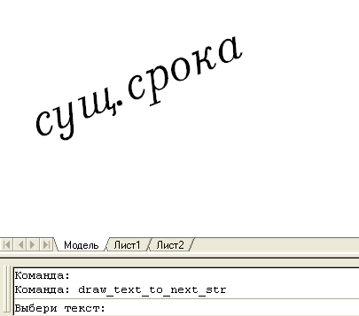

Команда:draw_text_to_next_str
Команда:draw_text_to_next_strПозволяет продолжить существующий однострочный текст на следующей строке. Тем же стилем размером и т.д.
Команда:draw_text_to_next_str
 Выбери текст:
Выбери текст:
 выбирает объект типа текст
выбирает объект типа текст
Введи текст:
вводит текстовую строку
Запрос текстовой строки повторяется циклично, выход из программы ввод пустой строки.
Пример работы программы
